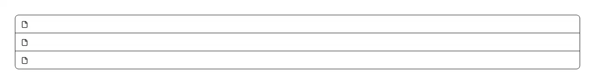

The list of files under a dropzone or file picker — one row each with the file name, its size, a progress bar while it uploads, an error with a retry button when it fails, and an X to drop it from the queue. Use it on any screen that accepts files: an attachment picker, an image or avatar upload, a CSV/spreadsheet import step, a document or PDF upload, a bulk media drop, or an import wizard. Common asks it answers: "file upload list", "upload queue", "show selected files with progress", "file list with remove button", "upload progress bar per file", "attachment list", "retry failed upload", "Dropbox/Gmail-style upload rows". shadcn/ui ships nothing that tracks an upload: its attachment component renders a file that is already attached — media, title, actions — with no status, no progress and no retry, and its progress primitive is a single bar with no notion of a file, so the row layout, the byte formatting, the per-file progress and the failure affordance are hand-rolled every time. It pairs with the file-dropzone component, which hands you a File[] and deliberately stops there: this is the half that shows what happened to those files. Pass an `items` array of `{ id, name, size?, status, progress?, error? }` where status is pending | uploading | done | error; omit `progress` and the bar goes indeterminate for uploads with no known length, and an empty array renders nothing so you can mount it unconditionally next to your queue state. It is presentational on purpose and never uploads anything — you keep the requests, the concurrency, the cancellation and the retry policy, and pass `onRemove`/`onRetry` to get the buttons. Accessibility is where a queue usually goes wrong and this one is built around it: progress sits in a role=progressbar, which is not a live region, so a file crawling from 1% to 100% does not narrate every tick; instead an always-mounted role=status region announces only the rows that just finished or just failed, batched into one message per change; the first render is treated as the starting state, so a list that mounts with finished rows stays silent; and every remove/retry button carries the file name in its accessible name, because a column of buttons all called "Remove" is unusable without sight of the row. Sizes are formatted to KB/MB/GB with tabular numerals, long names truncate with a title tooltip, and it is styled with shadcn tokens (muted-foreground, destructive, primary, accent, ring) so it follows light and dark themes; lucide-react is the only dependency. Distinct from save-status, which is a one-line indicator for a single background save, and from progress-ring, which is one circular meter: this is the multi-file queue.

Rendered on the shadcn default neutral palette with harness-generated props.
pnpm dlx shadcn@4.21.0 add @pulld/upload-list
| licence | POINTER |
|---|---|
| primitive base | none |
| type | registry:ui |
| files | src/components/ui/upload-list.tsx |
| npm deps pulled | none beyond the pre-installed peer set |
| registry deps | — |
| semantic / palette / hex | 15 / 2 / 0 |
| writes shared ui/ | yes — can overwrite the project’s own primitives |